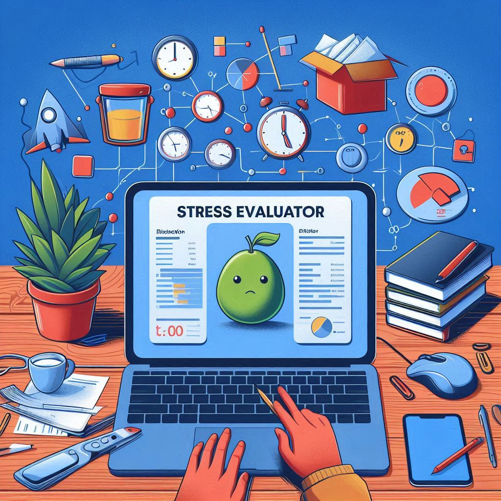
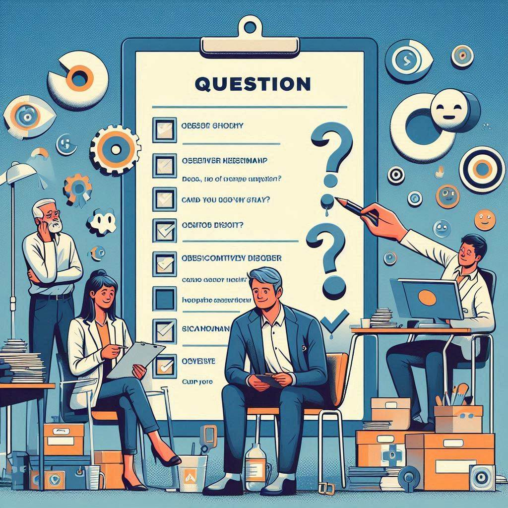

Escala de Estrés Percibido (EEP)
Prueba psicométrica de autoevaluación para evaluar el estrés percibido en el trabajo a partir de análisis de datos automatizados y algoritmos basados en reglas.
Escala Zung para evaluar la Depresión
Herramienta de autoevaluación para evaluar la depresión en adultos a partir de la Escala de Depresión Zung (SDS) y analisis automatizado de datos.

Escala Y-BOCS para evaluar el TOC
Herramienta para evaluar el trastorno obsesivo-compulsivo (TOC) en adolescentes y adultos a partir de Y-BOCS (Yale-Brown Obsessive Compulsive Scale).